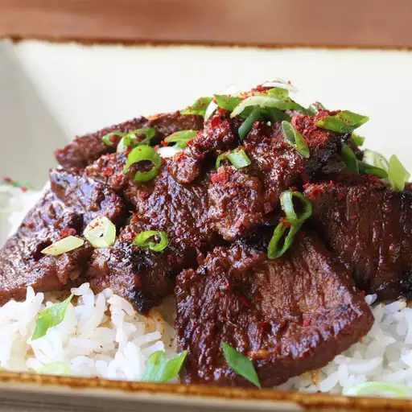

Bulgogi Beef

Ingredients:
- 1 1/4 lbs boneless beef short rib
- 4 cloves garlic, finely crushed
- 1/4 cup grated yellow onion
- 1 tbsp freshly grated ginger
- 1 tbsp toasted sesame oil
- 1 tbsp light brown sugar
- 1/3 cup freshly grated Asian pear
- 1/4 cup soy sauce
- 1 tbsp Korean red pepper flakes (gochugaru)
- 1/2 tsp kosher salt
- 1 tbsp vegetable oil
- 2 cups hot steamed rice
- 2 sliced green onions tops for garnish
Directions
- Mix garlic, grated onion, grated ginger, toasted sesame oil, and brown sugar together in a mixing bowl. Stir in grated pear, soy sauce, and red pepper flakes.
- Transfer meat to marinade and toss to coat on all sides. Cover and refrigerate, 1 to 2 hours.
- Season meat with salt and a drizzle of vegetable oil. Toss.
- Brush a cast iron skillet with a little vegetable oil and place over high heat. When the skillet is very hot, add beef in a single layer and cook until meat begins to caramelize around the edges and moisture begins to evaporate, 2 to 3 minutes per side. Serve over hot rice and top with green onion slices.